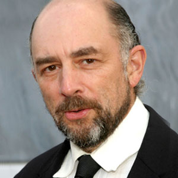
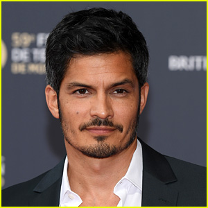

Alfred Thomas Highmore faz o papel de Shaun Murphy o protagonista da série,nascido em Londres 14 de fevereiro de 1992,começou sua carreira com apenas 7 anos com pequenos papeis na televisão,ele ja participou de outros filmes como A Fantástica Fábrica de Chocolate de 2005.
Richard Schiff

Richard Schiff,nascido no dia 27 de maio de 1955 na cidade de Bethesda nos Estados Unidos,conhecido por sua performance como Toby Ziegler na série de televisão The West Wing, papel que lhe rendeu um Emmy Award,faz o papel do Doutor Glassman,que é o mentor de Shaun,é também e o diretor do hospital que Shaun trabalha.
Antonia Thomas
Antonia Laura Thomas nascida em 3 de novembro de 1986 em Londres,mais conhecida pelo seu papel de protagonista na série de ficção cientfica Misfits como Alisha Bailey. Estudou na Bristol Old Vic Theatre School, onde se formou bacharel em artes cênicas, graduando-se em 2009,ela faz o papel da Dr.ª Claire Browne,uma das residentes que trabalha com Shaun no Hospital.
Nicholas Gonzalez

Nicholas Edward Gonzalez é um ator americano,nascido no dia 3 de janeiro de 1976,em San Antonio,Texas. Ele é mais conhecido por interpretar os papéis de Alex Santiago na série de televisão Resurrection Blvd. da Showtime,em The Good Doctor ele interpreta Dr. Neil Melendez,um dos melhores cirurgioes do mundo
Hill Harper
Hill Harper é um ator americano nascido no dia 7 de maio de 1966 em Iowa City,nos Estados Unidos Conhecido pelo personagem Sheldon Hawkes na série de televisão CSI: NY.Em The Good Doctor,ele interpreta o Dr. Marcus Andrews,um dos chefes das cirurgias do hospital